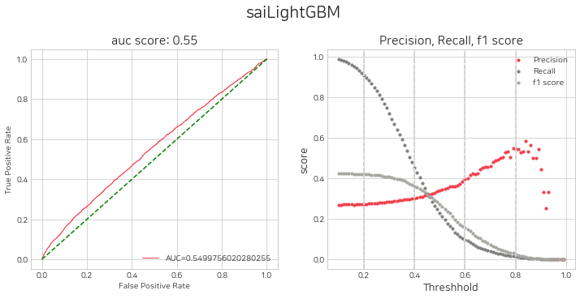
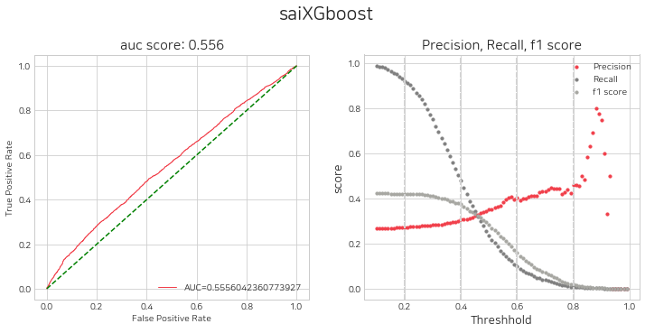
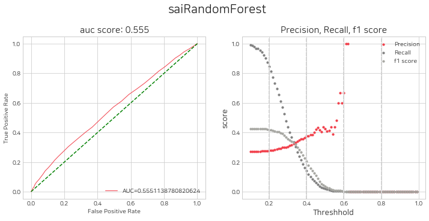
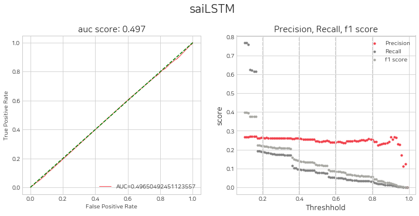
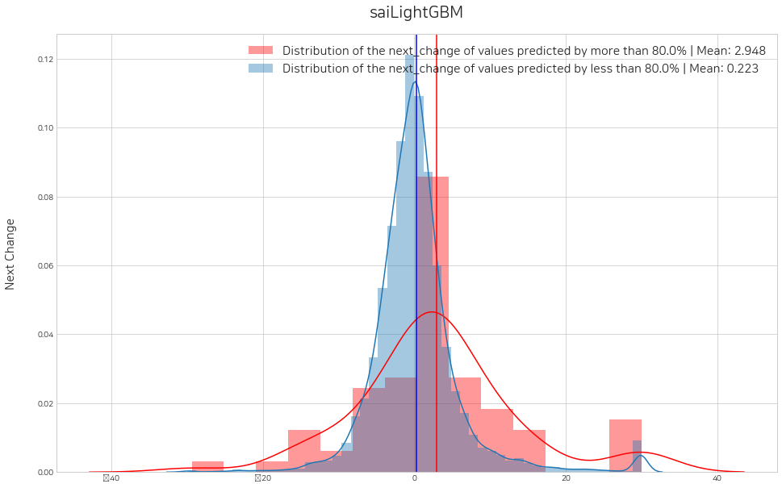
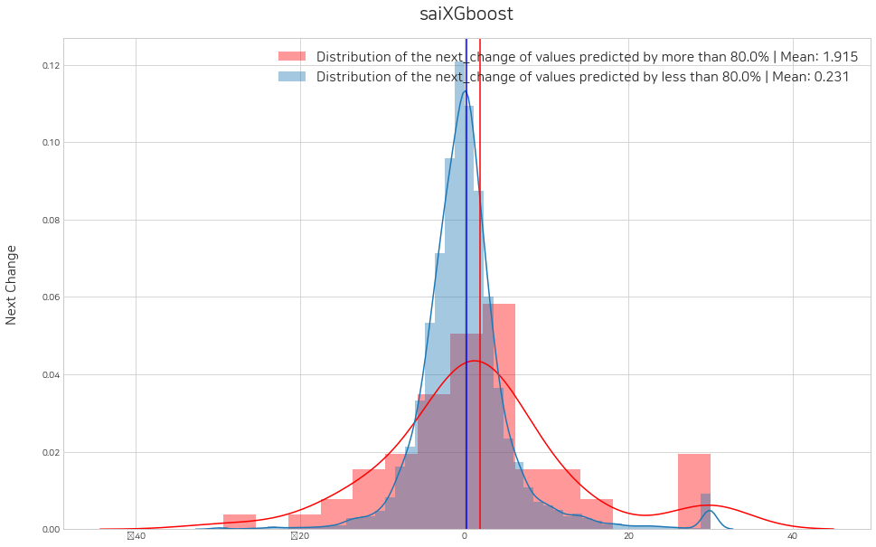
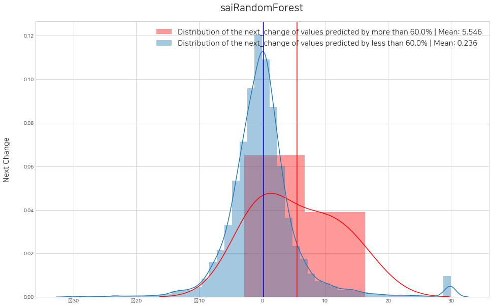
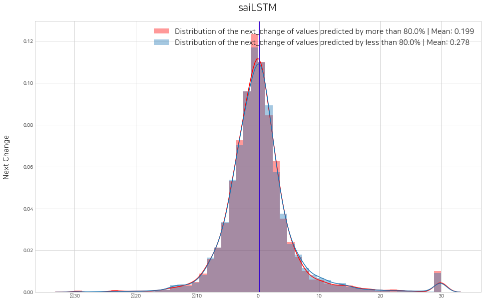
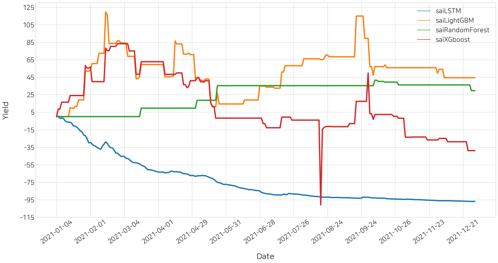

import stockait as sai
import pandas as pd본 글은 stockait 라이브러리를 사용하여 같은 방식으로 전처리한 데이터셋으로 각각 다른 머신러닝 모델을 학습하여 어떤 트레이더의 수익률이 가장 높게 나오는지 실험해보는 예제입니다.
1. 데이터 불러오기
⭐ 본 글에서 사용되는 주가 데이터셋 전처리는 생략하고, [stockait] stockait 사용하여 주가 예측 모델 학습하기 글과 같은 방식으로 전처리하여 저장한 데이터를 불러와서 사용하겠습니다.
df_time_series = pd.read_parquet("../../../../cha0716/time_series_0305.parquet")
df_time_series_scaled = pd.read_parquet("../../../../cha0716/time_series_scaled_0305.parquet")
df_time_series = df_time_series[~(df_time_series["Code"].isin(["33626K", "33637k", '33637K']))]
df_time_series_scaled = df_time_series_scaled[~(df_time_series_scaled["Code"].isin(["33626K", "33637k", '33637K']))]
df_time_series['Code'] = df_time_series['Code'].astype(str).str.zfill(6)
df_time_series_scaled['Code'] = df_time_series_scaled['Code'].astype(str).str.zfill(6)불러온 데이터셋은 2016년 부터 2021년까지 div-close 방법으로 표준화된 시계열 데이터입니다.
data = df_time_series # Data Before Scaling
data_scaled = df_time_series_scaled # Data After Scaling
# train, test dataset split
train_data = data[(data['Date'] >= '2017-01-01') & (data['Date'] <= '2020-12-31')]
test_data = data[(data['Date'] >= '2021-01-01') & (data['Date'] <= '2021-12-31')]
# train, test dataset split (scaled)
train_data_scaled = data_scaled[(data_scaled['Date'] >= '2017-01-01') & (data_scaled['Date'] <= '2020-12-31')]
test_data_scaled = data_scaled[(data_scaled['Date'] >= '2021-01-01') & (data_scaled['Date'] <= '2021-12-31')]
print(train_data.shape, test_data.shape)
print(train_data_scaled.shape, test_data_scaled.shape)(828290, 483) (217159, 483)
(828290, 483) (217159, 483)2017년 부터 2020년까지는 학습 데이터셋, 2021년은 시험 데이터셋으로 설정하였습니다.
2. Trader 정의
그 다음 트레이더를 정의합니다. 본 글에서는 글에서 정의했던 LightGBM, XGBoost, RandomForest, LSTM 모델을 그대로 사용하겠습니다.
lst_trader = [] 1) LightGBM
from lightgbm import LGBMClassifier
# conditional_buyer: Object that determines acquisition based on data filtering conditions
b1_lg = sai.ConditionalBuyer()
def sampling1(df): # Create a conditional function
condition1 = (-0.3 <= df.D0_Change) & (df.D0_Change <= 0.3) # Remove exceptions that exceed upper and lower limits
condition2 = (df.D0_Close * df.D0_Volume) >= 1000000000 # condition 1: Transaction amount of more than 1 billion won
condition3 = (-0.05 >= df.D0_Change) | (0.05 <= df.D0_Change) # condition 2: Today's stock price change rate is more than 5%
condition = condition1 & condition2 & condition3
return condition
b1_lg.condition = sampling1 # Define the condition function directly (sampling1) and store it in the condition property
# machinelearning_buyer: Object that determines acquisition by machine learning model
b2_lg = sai.MachinelearningBuyer()
# Save user-defined models to algorithm properties
scale_pos_weight = round(72/28 , 2)
params = { 'random_state' : 42,
'scale_pos_weight' : scale_pos_weight,
'learning_rate' : 0.1,
'num_iterations' : 1000,
'max_depth' : 4,
'n_jobs' : 30,
'boost_from_average' : False,
'objective' : 'binary' }
b2_lg.algorithm = LGBMClassifier( **params )
# SubSeller: Object that determines selling all of the following days
sell_all = sai.SubSeller()
# Trader Object
t1 = sai.Trader()
t1.name = 'saiLightGBM' # Trader's name
t1.label = 'class&0.02' # Set the Trader dependent variable (do not set if it is regression analysis)
t1.buyer = sai.Buyer([b1_lg, b2_lg]) # [ conditional buyer, machinelearning buyer ]
t1.seller = sai.Seller(sell_all)
lst_trader.append(t1)2) XGBoost
from xgboost import XGBClassifier
b1_xgb = sai.ConditionalBuyer()
def sampling2(df):
condition1 = (-0.3 <= df.D0_Change) & (df.D0_Change <= 0.3)
condition2 = (df.D0_Close * df.D0_Volume) >= 1000000000
condition3 = (-0.05 >= df.D0_Change) | (0.05 <= df.D0_Change)
condition = condition1 & condition2 & condition3
return condition
b1_xgb.condition = sampling2
b2_xgb = sai.MachinelearningBuyer()
scale_pos_weight = round(72/28 , 2)
b2_xgb.algorithm = XGBClassifier(random_state = 42,
n_jobs=30,
scale_pos_weight=scale_pos_weight,
learning_rate=0.1,
max_depth=4,
n_estimators=1000,
)
sell_all = sai.SubSeller()
t2 = sai.Trader()
t2.name = 'saiXGboost'
t2.label = 'class&0.02'
t2.buyer = sai.Buyer([b1_xgb, b2_xgb])
t2.seller = sai.Seller(sell_all)
lst_trader.append(t2) 3) RandomForest
from sklearn.ensemble import RandomForestClassifier
b1_rf = sai.ConditionalBuyer()
def sampling3(df):
condition1 = (-0.3 <= df.D0_Change) & (df.D0_Change <= 0.3)
condition2 = (df.D0_Close * df.D0_Volume) >= 1000000000
condition3 = (-0.05 >= df.D0_Change) | (0.05 <= df.D0_Change)
condition = condition1 & condition2 & condition3
return condition
b1_rf.condition = sampling3
b2_rf = sai.MachinelearningBuyer()
b2_rf.algorithm = RandomForestClassifier()
sell_all = sai.SubSeller()
t3 = sai.Trader()
t3.name = 'saiRandomForest'
t3.label = 'class&0.02'
t3.buyer = sai.Buyer([b1_rf, b2_rf])
t3.seller = sai.Seller(sell_all)
lst_trader.append(t3) 4) LSTM
from tensorflow import keras
import numpy as np
b1_ls = sai.ConditionalBuyer()
def sampling4(df):
condition1 = (-0.3 <= df.D0_Change) & (df.D0_Change <= 0.3)
condition2 = (df.D0_Close * df.D0_Volume) >= 1000000000
condition3 = (-0.05 >= df.D0_Change) | (0.05 <= df.D0_Change)
condition = condition1 & condition2 & condition3
return condition
b1_ls.condition = sampling4
b2_ls = sai.MachinelearningBuyer()
# ⭐ User-defined functions (users who want deep learning modeling)
def transform(data): # A function that converts into a two-dimensional structure / data: list (lst_time_series)
data_2d = []
n_col = int(len(data[0]) / 10)
for row in data:
data_2d.append([])
for i in range(0, len(row), n_col):
data_2d[-1].append(row[i:i+n_col])
return np.array(data_2d)
# Directly define a two-dimensional structure transformation function (transform) and store it in the data_transform property
b2_ls.data_transform = transform
model = keras.models.Sequential()
model.add(keras.layers.InputLayer(input_shape=(10, 48)))
model.add(keras.layers.LSTM(128, activation='selu', return_sequences=True))
model.add(keras.layers.Dropout(0.2))
model.add(keras.layers.LSTM(64, activation='selu', return_sequences=True))
model.add(keras.layers.Dropout(0.2))
model.add(keras.layers.LSTM(32, activation='selu', return_sequences=False))
model.add(keras.layers.Dropout(0.2))
model.add(keras.layers.Dense(1, activation='sigmoid'))
model.compile(optimizer=keras.optimizers.Adam(
learning_rate=keras.optimizers.schedules.ExponentialDecay(0.05,decay_steps=100000,decay_rate=0.96)),
loss="binary_crossentropy",
metrics=['accuracy'])
b2_ls.algorithm = model
sell_all = sai.SubSeller()
t4 = sai.Trader()
t4.name = 'saiLSTM'
t4.label = 'class&0.02'
t4.buyer = sai.Buyer([b1_ls, b2_ls])
t4.seller = sai.Seller(sell_all)
lst_trader.append(t4)2023-04-02 10:53:25.764037: I tensorflow/core/platform/cpu_feature_guard.cc:193] This TensorFlow binary is optimized with oneAPI Deep Neural Network Library (oneDNN) to use the following CPU instructions in performance-critical operations: AVX2 FMA
To enable them in other operations, rebuild TensorFlow with the appropriate compiler flags.
2023-04-02 10:53:25.885853: E tensorflow/stream_executor/cuda/cuda_blas.cc:2981] Unable to register cuBLAS factory: Attempting to register factory for plugin cuBLAS when one has already been registered
2023-04-02 10:53:26.354422: W tensorflow/stream_executor/platform/default/dso_loader.cc:64] Could not load dynamic library 'libnvinfer.so.7'; dlerror: libnvinfer.so.7: cannot open shared object file: No such file or directory; LD_LIBRARY_PATH: /usr/local/cuda-11.6/lib64::/usr/local/cuda-11.5/lib64:/usr/local/cuda-11.5/targets/x86_64-linux/lib
2023-04-02 10:53:26.354479: W tensorflow/stream_executor/platform/default/dso_loader.cc:64] Could not load dynamic library 'libnvinfer_plugin.so.7'; dlerror: libnvinfer_plugin.so.7: cannot open shared object file: No such file or directory; LD_LIBRARY_PATH: /usr/local/cuda-11.6/lib64::/usr/local/cuda-11.5/lib64:/usr/local/cuda-11.5/targets/x86_64-linux/lib
2023-04-02 10:53:26.354484: W tensorflow/compiler/tf2tensorrt/utils/py_utils.cc:38] TF-TRT Warning: Cannot dlopen some TensorRT libraries. If you would like to use Nvidia GPU with TensorRT, please make sure the missing libraries mentioned above are installed properly.
2023-04-02 10:53:27.287623: E tensorflow/stream_executor/cuda/cuda_driver.cc:265] failed call to cuInit: CUDA_ERROR_NO_DEVICE: no CUDA-capable device is detected
2023-04-02 10:53:27.287685: I tensorflow/stream_executor/cuda/cuda_diagnostics.cc:156] kernel driver does not appear to be running on this host (ahnbi2): /proc/driver/nvidia/version does not exist
2023-04-02 10:53:27.288577: I tensorflow/core/platform/cpu_feature_guard.cc:193] This TensorFlow binary is optimized with oneAPI Deep Neural Network Library (oneDNN) to use the following CPU instructions in performance-critical operations: AVX2 FMA
To enable them in other operations, rebuild TensorFlow with the appropriate compiler flags.네개의 모델을 정의하였고 각각의 모델을 모두 lst_trader 안에 넣었습니다.
3. Trader(Model) 학슴 및 평가
1) 트레이더에 데이터셋 저장하기
트레이더 안에 데이터셋을 저장합니다.
sai.save_dataset(lst_trader, train_data, test_data, train_data_scaled, test_data_scaled)== saiLightGBM ==
== train_code_date: (828290, 2), test_code_date: (217159, 2) ==
== trainX: (828290, 480), testX: (217159, 480) ==
== trainX_scaled: (828290, 480), testX_scaled: (217159, 480) ==
== trainY: (828290,), testY: (217159,) ==
== trainY_classification: (828290,), testY_classification: (217159,) ==
== saiXGboost ==
== train_code_date: (828290, 2), test_code_date: (217159, 2) ==
== trainX: (828290, 480), testX: (217159, 480) ==
== trainX_scaled: (828290, 480), testX_scaled: (217159, 480) ==
== trainY: (828290,), testY: (217159,) ==
== trainY_classification: (828290,), testY_classification: (217159,) ==
== saiRandomForest ==
== train_code_date: (828290, 2), test_code_date: (217159, 2) ==
== trainX: (828290, 480), testX: (217159, 480) ==
== trainX_scaled: (828290, 480), testX_scaled: (217159, 480) ==
== trainY: (828290,), testY: (217159,) ==
== trainY_classification: (828290,), testY_classification: (217159,) ==
== saiLSTM ==
== train_code_date: (828290, 2), test_code_date: (217159, 2) ==
== trainX: (828290, 480), testX: (217159, 480) ==
== trainX_scaled: (828290, 480), testX_scaled: (217159, 480) ==
== trainY: (828290,), testY: (217159,) ==
== trainY_classification: (828290,), testY_classification: (217159,) ==
2) 모델 학습
각 트레이더에 정의되어있는 머신러닝 모델을 학습합니다.
sai.trader_train(lst_trader) == saiLightGBM Model Fitting Completed ==
== saiXGboost Model Fitting Completed ==
== saiRandomForest Model Fitting Completed ==
1268/1268 [==============================] - 18s 13ms/step - loss: 257227161600.0000 - accuracy: 0.6267
== saiLSTM Model Fitting Completed ==3) 모델 평가 및 임계값 설정
모델 평가
네개의 모델에 대하여 threshold 별 평가지표를 시각화 하고, 매수를 위한 임계값 설정을 고려합니다.
sai.get_eval_by_threshold(lst_trader)380/380 [==============================] - 2s 4ms/step



임계값 설정
위에서 판단한 threshold를 순서대로 lst_threshold에 넣어주고, histogram을 그려 수익성 검증을 할 수 있습니다. 예시로 0.8, 0.8, 0.6, 0.8 로 설정해주었고, 변경해가며 수익성 검증 실험을 지속적으로 해볼 수 있습니다.
sai.set_threshold(lst_trader, lst_threshold=[0.8, 0.8, 0.6, 0.8], histogram=True)Error: local variable 'threshold' referenced before assignment
380/380 [==============================] - 2s 4ms/step<Figure size 1152x720 with 0 Axes><Figure size 1152x720 with 0 Axes>
<Figure size 1152x720 with 0 Axes><Figure size 1152x720 with 0 Axes>
<Figure size 1152x720 with 0 Axes><Figure size 1152x720 with 0 Axes>
<Figure size 1152x720 with 0 Axes><Figure size 1152x720 with 0 Axes>
4. Back-Testing
1) 매매일지 작성
각각의 트레이더에서 모든 날짜에 대하여 매수 및 매도 기록을 생성합니다.
df_signal_all = sai.decision(lst_trader, dtype='test')
df_signal_all217159it [00:06, 36183.33it/s]
217159it [00:05, 36418.57it/s]== saiLightGBM completed ==217159it [00:06, 35330.36it/s]
217159it [00:06, 35767.62it/s]== saiXGboost completed ==217159it [00:06, 35462.79it/s]
217159it [00:06, 35646.76it/s]== saiRandomForest completed ==
6787/6787 [==============================] - 30s 4ms/step217159it [00:05, 37334.97it/s]
217159it [00:05, 37169.70it/s]== saiLSTM completed ==| Trader_id | Date | Code | +(buy)/-(sell) | Amount | Close | |
|---|---|---|---|---|---|---|
| 0 | saiLightGBM | 2021-01-04 | 000020 | + | 0.0 | 19100.0 |
| 1 | saiLightGBM | 2021-01-05 | 000020 | + | 0.0 | 19400.0 |
| 2 | saiLightGBM | 2021-01-06 | 000020 | + | 0.0 | 19700.0 |
| 3 | saiLightGBM | 2021-01-07 | 000020 | + | 0.0 | 19700.0 |
| 4 | saiLightGBM | 2021-01-08 | 000020 | + | 0.0 | 19100.0 |
| ... | ... | ... | ... | ... | ... | ... |
| 217154 | saiLSTM | 2021-12-24 | 009900 | - | 1.0 | 30600.0 |
| 217155 | saiLSTM | 2021-12-27 | 009900 | - | 1.0 | 29900.0 |
| 217156 | saiLSTM | 2021-12-28 | 009900 | - | 1.0 | 29400.0 |
| 217157 | saiLSTM | 2021-12-29 | 009900 | - | 1.0 | 29850.0 |
| 217158 | saiLSTM | 2021-12-30 | 009900 | - | 1.0 | 30100.0 |
1737272 rows × 6 columns
2) 수익률 계산 시뮬레이션
위의 매매일지를 기반으로 각각의 트레이더의 모든 날짜에 대한 수익률을 계산합니다.
df_history_all = sai.simulation(df_signal_all, init_budget=10000000, init_stock={}, fee=0.01)
df_history_all100%|███████████████████████████████████████████████████████████████████████████████████████████████▌| 247/248 [00:07<00:00, 33.88it/s]== saiLSTM completed ==100%|███████████████████████████████████████████████████████████████████████████████████████████████▌| 247/248 [00:07<00:00, 33.80it/s]== saiLightGBM completed ==100%|███████████████████████████████████████████████████████████████████████████████████████████████▌| 247/248 [00:07<00:00, 33.88it/s]== saiRandomForest completed ==100%|███████████████████████████████████████████████████████████████████████████████████████████████▌| 247/248 [00:07<00:00, 33.95it/s]== saiXGboost completed ==| Trader_id | Sell_date | Budget | Yield | Stock | |
|---|---|---|---|---|---|
| 0 | saiLSTM | 2021-01-04 | 10000000 | 0.000000 | {} |
| 1 | saiLSTM | 2021-01-05 | 10042066 | 0.420662 | {'000100': 3, '000660': 2, '001120': 10, '0013... |
| 2 | saiLSTM | 2021-01-06 | 9793093 | -2.069066 | {'000120': 1, '001250': 154, '001430': 27, '00... |
| 3 | saiLSTM | 2021-01-07 | 9830300 | -1.696992 | {'000220': 59, '001200': 107, '001250': 205, '... |
| 4 | saiLSTM | 2021-01-08 | 9808160 | -1.918394 | {'000540': 105, '001200': 67, '001380': 131, '... |
| ... | ... | ... | ... | ... | ... |
| 243 | saiXGboost | 2021-12-24 | 6110500 | -38.894995 | {'025620': 315} |
| 244 | saiXGboost | 2021-12-27 | 6110500 | -38.894995 | {} |
| 245 | saiXGboost | 2021-12-28 | 6110500 | -38.894995 | {} |
| 246 | saiXGboost | 2021-12-29 | 6110500 | -38.894995 | {} |
| 247 | saiXGboost | 2021-12-30 | 6110500 | -38.894995 | {} |
992 rows × 5 columns
3) Leader Board
트레이더의 최종 수익률 결과를 내림차순 정렬하여 데이터프레임으로 리더보드를 생성합니다.
sai.leaderboard(df_history_all)| Trader_id | Yield | |
|---|---|---|
| 0 | saiLightGBM | 44.423725 |
| 1 | saiRandomForest | 29.597223 |
| 2 | saiXGboost | -38.894995 |
| 3 | saiLSTM | -96.950032 |
본 실험에서는 LightGBM의 수익률이 가장 높게 나왔으며, LSTM의 수익률이 가장 낮게 나왔습니다.
4) 수익률 결과 시각화
트레이더 별로 모든 날짜에 대한 수익률 추이를 확인할 수 있습니다.
sai.yield_plot(df_history_all)